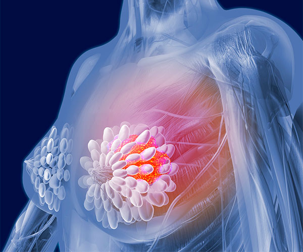
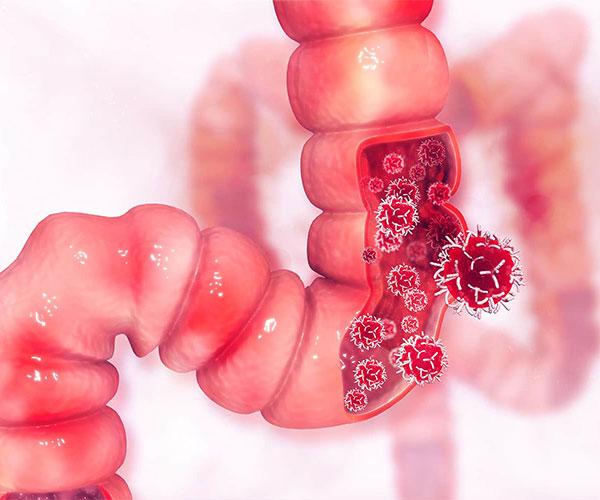
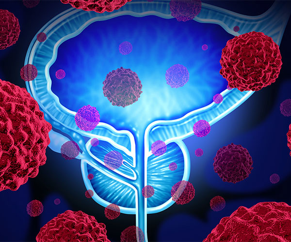

We shall aim to adopt a healthy lifestyle as there are few high risk features which are strongly associated with cancer.

High Risk Behaviours for Cancer
- Tobacco chewing frequently causes leukoplakia ( white patches) which may progress to oral cancer
- Cigarette / Tobacco smoking is most common avoidable environmental carcinogen which leads to various cancers such as lung, pancreas, larynx, mouth , tongue, esophagus, stomach, bladder, kidney
- Passive smoking i.e, inhaling of smoke from other people’s cigarettes also is a risk of cancer
- Alcohol consumption in excess leads to liver cancer, stomach cancer, esophageal cancer
- Excessive consumption of salted and smoked foods leads to Gastric cancer
- Excess intake of meat and low roughage diet leads to Colon cancer
- Occupational hazards such as asbestos smoke leads to lung cancer
- Dye and textile workers have a risk of Bladder cancer
- Sedentary lifestyle with no exercise and physical activity leads to OBESITY, an important cause of various cancers such as breast cancer, uterus cancer and colon cancer
Screening of Cancer
Screening applies to a routine health check-up/tests directed to detect some early changes of cancer in all healthy males and females. This includes clinical examination, lab tests and imaging. There are various methodologies to screen for cancer. It is not necessary that screening will pick up 100 percent cases of cancer. There are chances of false positive as well as false negativity.

Breast Cancer Screening
- Self Breast Examination
Should be done every month by females who is above 20 years of age - Mammography of Breasts
Specialized X ray once per year for all women above 50 years Annual Mammography is recommended for women above 40 years with high risk features such as family history of breast cancer.
DO NOT HESITATE TO EXAMINE AND IMAGE THE BREAST, NO MATTER WHAT AGE, IF CLINICAL SYMPTOMS/ SIGNS WARRANT IT
Cervical Cancer Screening
- Pap Smear
It is a simple , painless OPD procedure where a wooden spatula is used to collect sample from the external surface of the cervix and the cervical canal by scraping . It is recommended every 3 years for women above 21 years of age. - HPV Testing
Is recommended and preferred in addition to PAP smear in all females. If we add HPV testing to PAP smear the interval of screening increases to 5 years in place of 3 years.

Colon Cancer Screening
- Colonoscopy
It is an OPD procedure and should be done in men and women who are above 50 years . The gastroenterologist insert a flexible fibre optic scope through the complete length of large intestine. It should be repeated once every 10 years. - Sigmoidoscopy
The doctor uses a flexible, lighted tube called a sigmoidoscope to check the lower part of the colon. It should be repeated once every 5 years.
Lung Cancer Screening
- Yearly screening with a low-dose CT scan is recommended for people age 55 to 74 who have smoked for 30 pack years or more. It is also recommended for those age 55 to 74 who have quit within the past 15 years.
One pack year is equal to smoking 20 cigarettes (1 pack) a day each year.

Prostate Cancer Screening
- Serum PSA is recommended for men above 50 years , and should be repeated annually. This is a simple blood test and is available at major diagnostic centres.
- Digital Rectal examination by a clinician/surgeon or urologist is also recommended along with serum PSA annually.